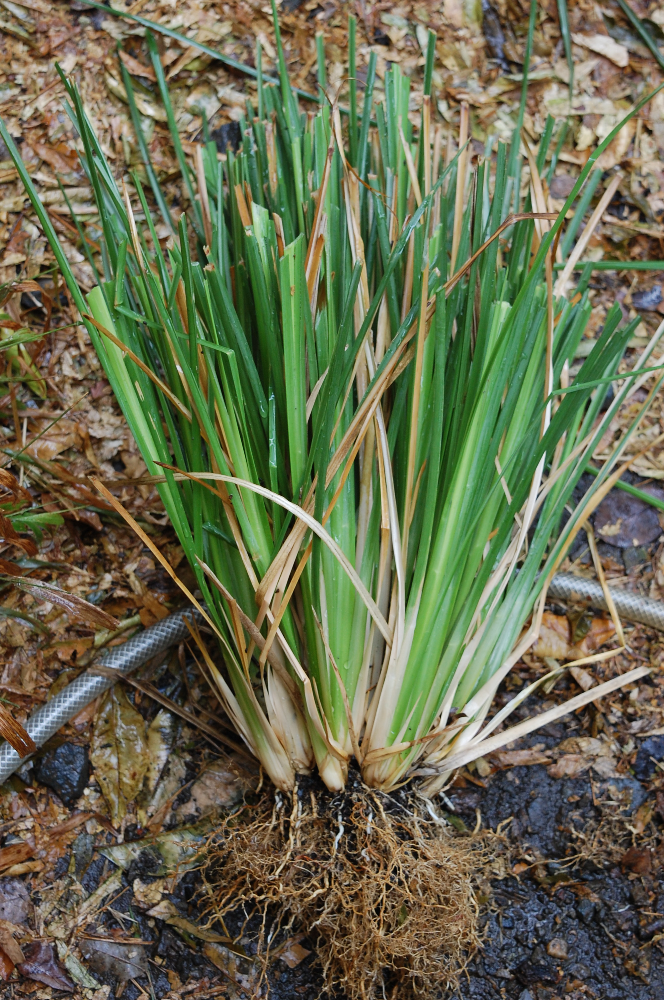

NEW ARRIVALS

Pirandai
Rain Lilly
The name rain lilies comes from their tendency to send up flushes of flowers within a few days after a soaking rain...More
Pirandai
Pirandai is very useful for stomach as well as heart. It will set right gastric disorder and protect the heart. ...More

Vetiver
Vetiver is sometimes applied directly to the skin for relieving stress,as well as for emotional traumas and shock, ...More